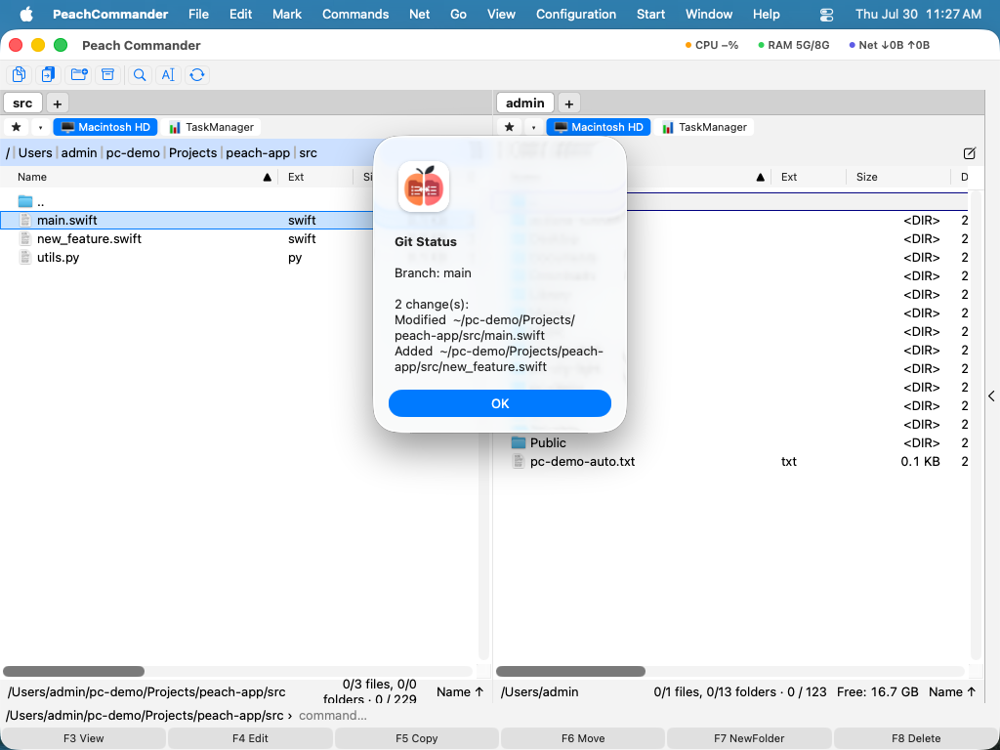

Git
Git-insticksprogrammet visar tillståndet för ett Git-arkiv direkt i filpanelen — ingen separat app, ingen terminal. Det lägger till två kolumner som visar varje fils status i arbetsträdet och den aktuella grenen, en undermeny Git för de vardagliga kommandona (status, köa, checka in, hämta, skicka), och det använder det git som redan är installerat på din Mac. Det är ett insticksprogram, så du kan slå av det eller ta bort det i Konfiguration ▸ Insticksprogram….
Vad det tillför
- Två fillistkolumner — Git Status och Branch. I ett arkiv visar varje fil ett kort statusord (Ändrad, Tillagd, Borttagen, Ospårad, Namnbytt, Kopierad, Konflikt, Ignorerad eller Förändrad) och panelen visar den aktuella grenen. Slå på kolumnerna i Konfiguration ▸ Kolumner… (se Visningslägen och sortering).
- En Git-meny — under Kommandon ▸ Git, och i högerklicksmenyn för en fil, med: Git Status…, Git Add (köa), Git Commit…, Git Pull och Git Push.

(Figur: Git Status rapporterar grenen och varje ändring i arbetsträdet.)Kontrollera statusen
- Placera markören på en fil eller mapp inuti ett Git-arkiv.
- Välj Kommandon ▸ Git ▸ Git Status… (eller högerklicka ▸ Git ▸ Git Status…).
- En sammanfattning visas: den aktuella grenen (eller (detached)), sedan antingen Working tree clean. eller en lista över ändringar, där varje rad visar statusen och filsökvägen.
Om markören inte är inuti ett arkiv säger insticksprogrammet helt enkelt Not a Git repository.
Köa, checka in, hämta, skicka
- Git Add (köa) köar filen under markören (
git add). - Git Commit… ber om ett incheckningsmeddelande och checkar sedan in alla ändringar (
git commit -a). Den kombinerade utdatan visas så att du kan se exakt vad som hände. - Git Pull gör en fast-forward-only-hämtning (
git pull --ff-only). - Git Push skickar den aktuella grenen (
git push).
Efter ett kommando som ändrar arkivet uppdateras den aktiva panelen så att statuskolumnerna hålls aktuella.
Anmärkningar
- Insticksprogrammet använder systemets Git på
/usr/bin/git. Om Git inte är installerat rapporterar kommandona att Git inte är tillgängligt. (Att installera Xcode Command Line Tools tillhandahåller det.) - Arkivstatusen läses en gång per mapp och cachas, så att bläddring i ett stort arkiv förblir snabb; cachen uppdateras efter varje kommando som ändrar trädet.
- Incheckning använder
git commit -a, som checkar in spårade ändringar; helt nya filer behöver fortfarande Git Add (köa) först. - Kolumnrubrikerna Git Status och Branch visas för närvarande på engelska även i andra gränssnittsspråk; värdena och dialogerna är lokaliserade.